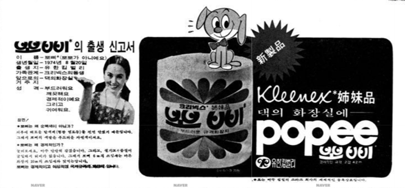

천 등으로 만든 손수건이 대부분이던 시대에 세계 최초의 일회용 티슈를 발명한 사람은 독일 괴핑겐에 종이공장을 소유하고 있던 구스타프 크룸으로, 1894년에 특허를 출원하였다. 이 일회용 티슈는 펄프로 만든 매우 얇은 종이에 글리세린을 도포하여 내구성을 높이고 부드럽게 만든 것이다. 그로부터 35년 뒤인 1929년에 뉘른베르크 종이공장 조합이 크룸의 발명을 계승하여 '순수한 펄프로 만든 최초의 티슈'(erste Papiertaschentuch aus reinem Zellstoff)라는 제목으로 상표권을 등록했는데, 이것이 현재에도 시중에서 판매되고 있는 템포(Tempo) 티슈이다. 글리세린에 꽃이나 허브, 과일 향을 녹여 입힐 수 있기 때문에 복숭아 향에서부터 라벤더 향까지 시중에 여러 종류가 있다.
한편, 미국의 킴벌리-클라크사도 비슷한 시기에 자체적으로 티슈를 개발하였다. 20세기 초 1차 세계대전에 참전 중이던 미국은 붕대나 거즈 등의 군수물자가 부족하였는데, 이에 킴벌리-클라크사는 20세기 초반에 셀루코튼이라는 물질을 개발하였다. 펄프를 이용하여 면직물처럼 만든 것으로, 면보다 흡수력이 5배 높은 물질로, 붕대의 대용으로 쓰기에 알맞았다. 이 물건은 흡수력이 너무나도 좋았고, 한 번 쓰고 버리기에도 부담이 없었기 때문에 야전병원에서 대단히 많이 사용되었다. 또한 이 셀루코튼은 전쟁 중 다른 용도로 사용되었는데, 독일이 이때 독가스를 개발하자 미군은 방독면을 썼는데, 방독면의 필터에 이 셀루코튼을 사용했다.[2] 1918년 전쟁이 끝나자 셀루코튼의 재고가 넘쳐나고 이에 킴벌리-클라크사는 민수용으로 활용할 방안을 생각하게 된다. 이에 1924년 크리넥스 티슈(Kleenex Tissue)라는 상표명을 등록하여 1회용 화장지라는 컨셉으로 세상에 내놓는다. 1929년에는 pop-up box라는 최초의 휴지갑을 선보이기도 하였다.[3]
이후 템포는 독일과 이탈리아 등 유럽 시장에서 크게 히트를 치고, 크리넥스는 북미와 아시아에서 히트를 치면서 각각의 지역에서 사실상 1회용 손수건 내지 1회용 화장지를 일컫는 일반대명사가 되기도 하였다.
이렇듯 초기의 용도는 제1차 세계대전에서의 부족한 탈지면의 대용품으로 개발 된 것이었기에 붕대로도 쓰고 심지어는 흡수력을 대폭 늘려 방독면 필터로도 썼으나, 전쟁이 끝나고 대량생산된 휴지가 민간에 풀리면서 지금 우리가 아는 흔한 휴지의 용도로 쓰이게 되었다.
